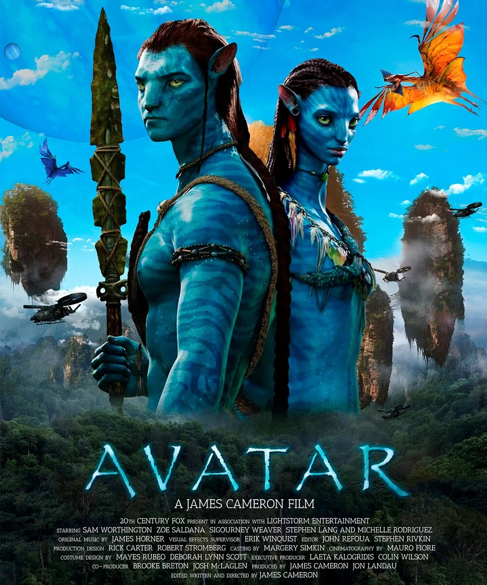
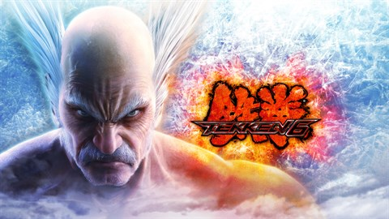

Card Title
Após formar uma família, Jake Sully e Ney'tiri fazem de tudo para ficarem juntos. No entanto, eles devem sair de casa e explorar as regiões de Pandora quando uma antiga ameaça ressurge, e Jake deve travar uma guerra difícil contra os humanos.
Card Title

Baseado no conto de Roald Dahl, este cômico e fantástico filme segue o jovem Charlie Bucket e seu avô Joe. Eles se juntam a um pequeno grupo de ganhadores de uma competição, os quais vão para um passeio na mágica e misteriosa fábrica do excêntrico Willy Wonka.
Card Title
6 é um jogo de luta, o sétimo da franquia Tekken, criado e publicado pela Namco Bandai Games. Foi lançado aos Arcades japoneses no dia 26 de novembro de 2007, e foi o primeiro jogo a ser lançado no sistema de Arcade System 357
Card Title

Street Fighter II decorre vários anos depois do primeiro torneio, quando Ryu derrotou Sagat na final. M. Bison, um ditador da Tailândia , organiza um novo torneio e convidou os melhores lutadores do mundo para competir